رتّبنا العرض على معايير التحدي الستة بأوزانها. في أسفل كل شريحة المعيار الذي تخدمه، وفي آخر العرض جدول يجمع الأدلة.
مشكلة موثّقة بأرقام، وجمهور محدد، ومنتج مبني على حاجاته.
مصادر معتمدة، ومدقق، ومكتب مراجعة شرعية، ولا فتوى من النموذج.
ذكاء مقيَّد بالمصادر يؤدي مهام محددة تتحسن بوجوده.
مبني ومنشور ويعمل: رابط حي، ومستودع، وفيديو.
مسار ومساعد وإنسان وأدوات يومية في تطبيق واحد.
فريق من أربعة يغطي المنصة والتصميم والتعلّم والمعرفة.
السنة الأولى أصعب السنوات: المحتوى الموثوق أغلبه بالعربية، وما بلغاتهم متفرّق ومتضارب، والمتابعة بعد يوم الإسلام ضعيفة.
مسلمًا جديدًا في المملكة بين ٢٠١٩ و٢٠٢٣، منهم ١٦٣٬٣١٩ في ٢٠٢٣ وحده
أصبحوا وحيدين بعد أن أعلنوا إسلامهم لمن حولهم
لم يجدوا أجوبة عن أسئلتهم، وتلقّى مثلهم معلومات خاطئة
فقط وجدوا الإنترنت مفيدًا، مع أنه ثاني أكثر ما يلجؤون إليه
المصادر: وزارة الشؤون الإسلامية (واس، يناير ٢٠٢٤)؛ استبانة مركز أصول على ١١٤ مسلمًا جديدًا (٢٠١٥).
كل شاشة في رفيق جاءت من حاجة واحد منهم: لغة، أو وقت ضيق، أو خوف من أن يُكشف.
عامل وافد أسلم قبل أسابيع. لغته التاغالوغية، ووقته ورصيد جواله محدودان. يحتاج دروسًا قصيرة بلغته تعمل دون اتصال.
أسلم عبر الإنترنت ولا يعرف مسلمًا في مدينته. يحتاج إجابة يثق بمصدرها، وإنسانًا يسأله حين لا تكفي الشاشة.
أسلمت وتخفي إسلامها عن أسرتها. تحتاج تطبيقًا لا يكشفها: وضعًا خفيًا، وخروجًا سريعًا، وطريقًا آمنًا إلى من يعينها.
تطبيق ويب يُثبَّت على أي جوال دون متجر، يعمل دون حساب ودون اتصال، بالعربية والإنجليزية والتاغالوغية.
مسار متدرّج من دروس قصيرة وتمارين، يبدأ من الشهادتين والوضوء والصلاة.
مساعد يجيب من المصادر المعتمدة وحدها، ويعرض مصدر كل إجابة.
زر «أريد إنسانًا» في كل شاشة، يصله بمرشد من جنسه وبلغته.
مواقيت الصلاة والقبلة والأذكار والقرآن، محسوبة ومحفوظة على جهازه.
كل خطوة تقود إلى التي بعدها، والإنسان حاضر في كل مرحلة.
يختار لغته، ويبدأ دون حساب ودون أي سؤال شخصي
الخطوة التالية أمامه دائمًا، ودرس في دقائق
الخطأ آمن، وشرح سببه بلغته من النص المعتمد
يعود إليه ما لم يتقنه، بعد أيام ثم أسابيع
يسأل بلغته في أي لحظة
إجابة بمصدرها، أو طريق مباشر إلى مرشد
ما فتحه من المسار يبقى معه، ومعه المواقيت والأذكار.
يُعرض بهدوء بعد أول درس، وينتقل إليه تقدّمه.
ما يدل على خطر يصل إلى إنسان فورًا، قبل أي نموذج.
رئيسية مرتّبة تضع الدرس القادم أولًا، ثم ما يحتاجه في يومه.
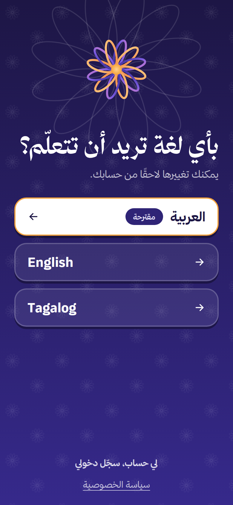
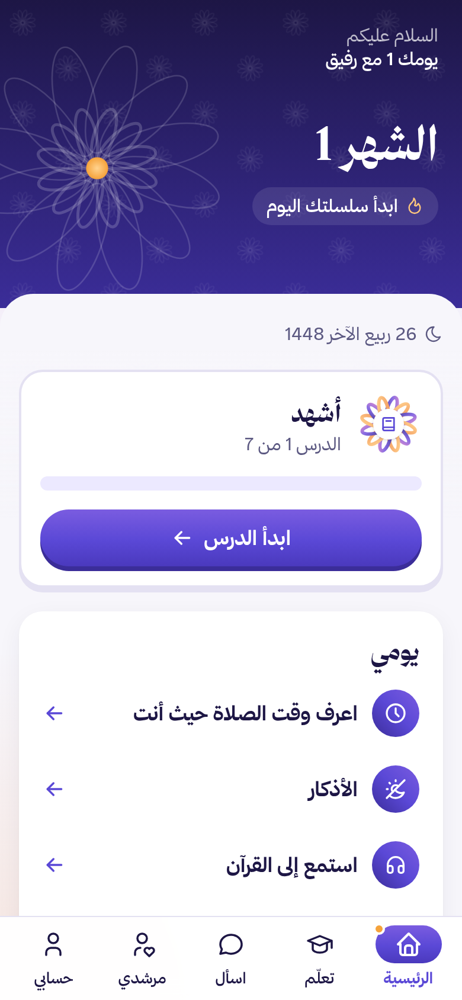
بطاقات قصيرة ثم تمارين، وكل نص شرعي بلفظه ومعناه ومصدره.
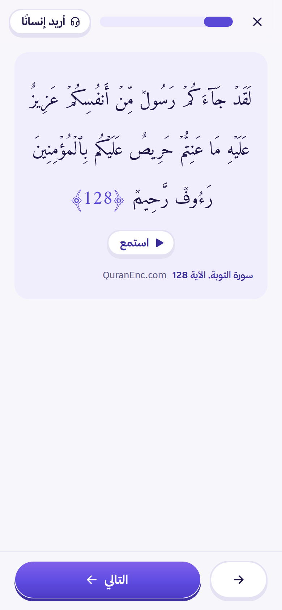
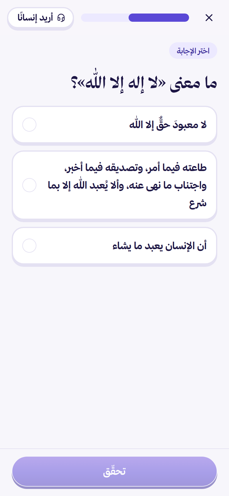
ما يجعل التعلّم في رفيق لطيفًا ودقيقًا: كل تفصيل له سبب تربوي.
يسأل بلغته، فيجيبه المساعد مما في المصادر المعتمدة، ويريه من أين جاءت كل جملة.
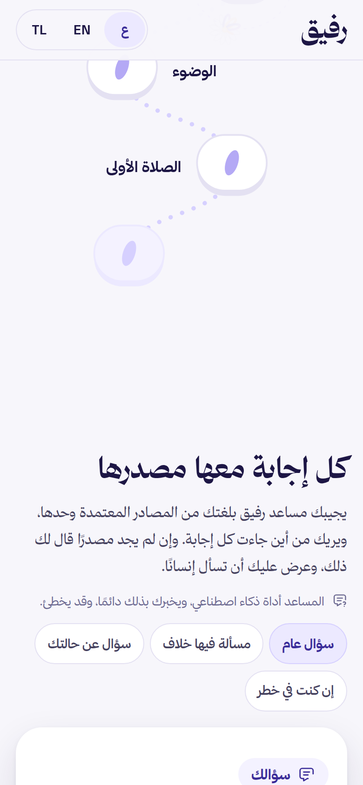
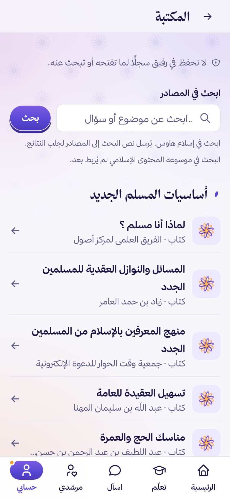
رفيق يحوّل السؤال إلى تعلّم، ويبقي ما ينفع المتعلّم في يده.
الذكاء الاصطناعي في رفيق مقيَّد بالمصادر: يسترجع ثم يصوغ ثم يُدقَّق، وما لا يجتاز لا يُعرض.
عبارات معتمدة بثلاث لغات، قبل أي نموذج
يصنّف السؤال: عام، شخصي، خلافي، خارج النطاق
بحث دلالي ونصي في المصادر المعتمدة بلغة السائل
يصوغ الإجابة من المقاطع وحدها، ويترك مكان الآية والحديث
سبعة فحوص آلية، ثم مطابقة كل جملة بمصدرها
النص الشرعي من قاعدة البيانات، مع بطاقة المصدر
نماذج Google المفتوحة، عبر OpenRouter: للتصنيف وصياغة الإجابة وتدقيقها.
نموذج احتياطي يتولّى العمل تلقائيًا، فتستمر الخدمة.
نموذج بحث متعدد اللغات يجد المقطع المناسب بالعربية والإنجليزية والتاغالوغية.
مهام صغيرة محددة، لكل منها مدخل محدود وفاحص، ولا يدخل اسم ولا هوية في أي طلب.
يشرح سبب الخطأ بلغة المتعلّم من البطاقة المعتمدة، ونموذج ثانٍ يتأكد أنه لم يزد عليها.
من ملخّص تعلّم بلا هوية، يقول له ما أتقنه وما يراجعه وما يتعلّمه الآن.
يرتّب مكوّنات الرئيسية بحسب تقدّمه ووقت يومه، مرة في اليوم.
بإذنه، يربط سؤاله بهدف تعلّمي، فيقترح عليه الدرس المناسب.
لا اسم ولا معرّف ولا سجل محادثة في طلبات النماذج.
يُعامل سؤاله مادةً تُحلَّل، لا تعليمات تُنفَّذ.
قرابة ٠٫٠٠١٥ دولار للإجابة، وسقف إنفاق يومي يحمي الميزانية.
الموثوقية في رفيق بنية في المنتج، لا وعد في العرض.
كل إجابة تُصاغ من مقاطع معتمدة مسترجعة، وتُعرض معها بطاقات مصادرها.
سبعة فحوص آلية، ثم مطابقة كل جملة بمصدرها. ما لا يجتاز لا يُعرض.
الآية والحديث يُعرضان من قاعدة البيانات بمعرّفهما، ولا يكتبهما نموذج.
المسألة الشخصية تُحال إلى أهل العلم، والخلافية تُعرض أقوالها دون ترجيح.
عبارات الخطر تُكتشف قبل أي نموذج، فتظهر أرقام الطوارئ ويصل الطلب إلى الفريق.
مكتب مراجع شرعي يعتمد المحتوى، وأكثر من ١٬١٠٠ اختبار آلي يحرس القواعد.
رفيق لا يترك المسلم الجديد مع شاشة. الإنسان جزء من المنتج، لا خدمة جانبية.
أدوات المسلم في يومه، بلا إعلانات ولا حساب، وموقعه لا يغادر الجهاز.
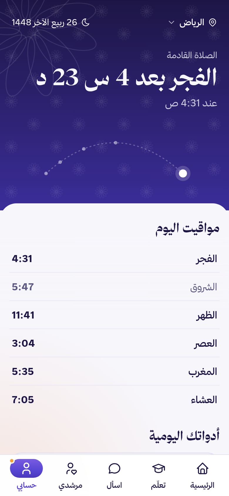
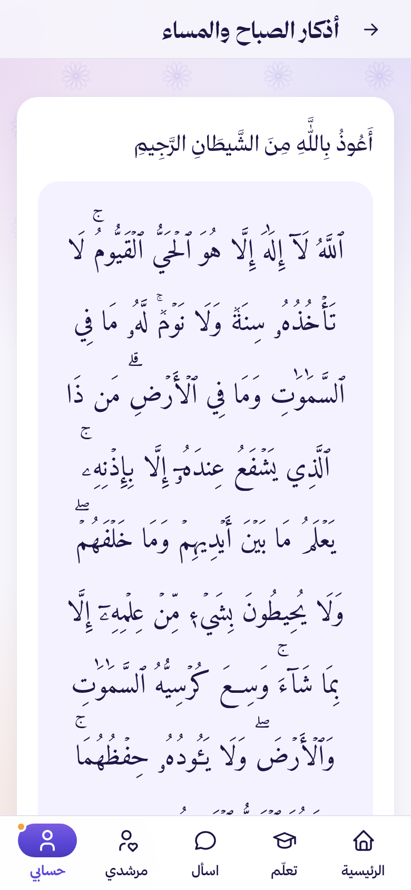
قرار شرعي وتربوي في أصل المنتج: العبادة بين العبد وربه، والتحفيز للتعلّم وحده.
سلسلة متسامحة: تتوقف عند الانقطاع ولا تلوم، وتكمل حين يعود.
وسام لكل وحدة يتمّها، وأوسمة المداومة عند ٧ و٣٠ و٦٦ يوم تعلّم.
زهرته تكسب بتلة مع كل وحدة ينهيها، حتى تكتمل.
لحظة فرح عند إتمام الدرس والوحدة ونيل الوسام.
يضعها المرشد لمجموعته، وهدفها تعلّم مشترك لا سباق.
في الوقت الذي يختاره المتعلّم، بنص محايد لا يذكر الدين.
المعتقد الديني بيانات حساسة، فنجمع أقل القليل، ونضع التحكم في يد صاحبه.
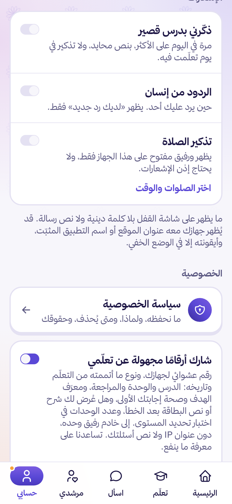
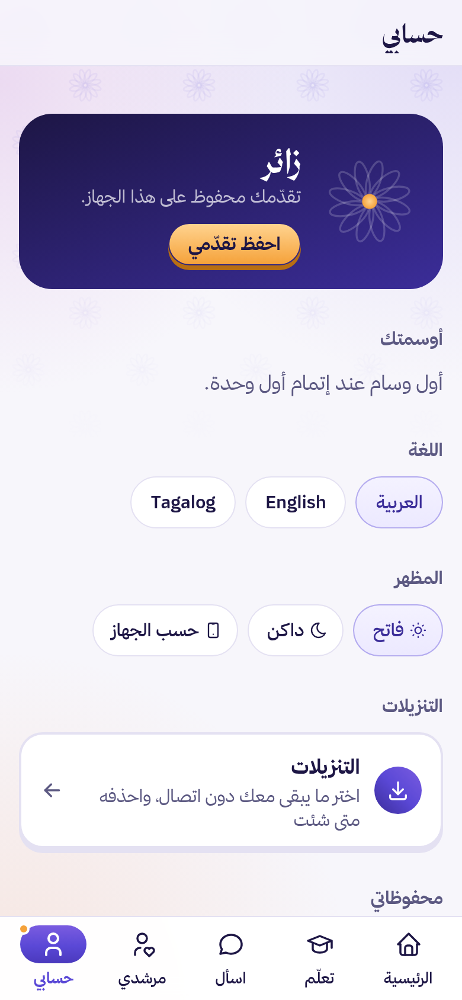
تطبيق ويب تقدّمي: يفتح من الرابط على أي جوال أو حاسوب، ويصير تطبيقًا على الشاشة الرئيسية.
واجهة المتعلّم كلها أقل من ميغابايت واحد مضغوطة، والصوت والفيديو عند التشغيل فقط.
يفتح في وضع الطيران: دروسه، والمواقيت، والأذكار، وما حفظه.
يختار ما يبقى معه: وحدة، أو سورة، أو كتاب، ويرى حجم كل منها.
على الأندرويد والآيفون، مغلقة حتى يفعّلها، ومحايدة على شاشة القفل.
العربية والإنجليزية والتاغالوغية، ويُعرض النص العربي داخل الإنجليزي باتجاهه الصحيح.
بطاقة في الرئيسية ومدخل في «حسابي»، بطريقة تناسب كل متصفح.
فاتح أو داكن أو بحسب الجهاز، ورئيسية يرتّبها الذكاء الاصطناعي.
رفيق منظومة كاملة، لا واجهة متعلّم فقط.
مؤشرات مجمّعة بلا هوية، وصلاحيات محددة لكل دور.
سجل واحد في المستودع يوثّق كل مصدر: ما نأخذه منه، وكيف، وبأي ترخيص.
| المصدر | ما نأخذه |
|---|---|
| QuranEnc | نص القرآن وترجمات معانيه المعتمدة |
| HadeethEnc | الأحاديث بدرجتها وشرحها |
| IslamHouse | كتب ومقاطع المسلم الجديد، والتلاوات |
| Quranpedia | تلاوات القرّاء آيةً آيةً |
| موقع ابن باز · الإسلام سؤال وجواب | فتاوى وإجابات |
| الحالة | ما يفعله رفيق |
|---|---|
| لا مصدر كافٍ | يقول ذلك، ويقترح مرشدًا |
| مسألة شخصية | يحيلها إلى أهل العلم |
| مسألة خلافية | يعرض الأقوال دون ترجيح |
| خطر على السائل | إنسان وأرقام طوارئ فورًا |
| نص قرآن أو حديث | من قاعدة البيانات، لا من النموذج |
كل تحديث يمر بالاختبارات ثم يُنشر تلقائيًا، مع فحص صحة وتراجع آلي.
React و TypeScript، تطبيق ويب تقدّمي يعمل دون اتصال، بنظام تصميم خاص.
FastAPI: مسار السؤال والتحقق، والتعلّم، والمرافقة.
PostgreSQL و pgvector: المقاطع المعتمدة وفهرسها الدلالي.
Gemma و DeepSeek و BGE-M3 عبر OpenRouter.
سؤالًا عربيًا أُجيب من المصادر في الموقع الحي
تصنيف صحيح لنوع السؤال في اختبار الموجّه
تكلفة الإجابة الواحدة، في ٩ إلى ١٥ ثانية
اختبار آلي ناجح يحرس القواعد
مسار تعلّمي، ومساعد موثّق، ومرشد بشري، وأدوات يومية، بثلاث لغات، في تطبيق واحد.
مصدر معروف لكل جملة، ونص شرعي لا يكتبه نموذج، وإنسان عند الحاجة.
تدرّج يعرف مستواه، ومراجعة تتكيّف معه، وبلغته.
محتوى معتمد، ومرشد موثوق من جنسه، وخصوصية تحميه.
المصادر المعتمدة تتيح عشرات اللغات، والبنية نفسها تستقبلها.
كل مكتب دعوي ينضم برمز، ويدير مرشديه، ويرى أثره.
خادم واحد، وأقل من سنت للإجابة، ومراجعة شرعية داخل المنتج.
كل ما في هذا العرض موجود في الموقع الحي اليوم، وبُني في أيام التحدي.
وحدات ودروس منشورة بثلاث لغات
اختبار آلي ناجح
أدوار لها لوحاتها: مرشد، ومراجع، وفريق، وجهة
لغات كاملة: العربية والإنجليزية والتاغالوغية
rafeeq.nan.sa/app يفتح دون حساب، على الجوال والحاسوب.
github.com/rafeeq-muslim/rafeeq بوثائق الميزات والمصادر والتشغيل.
youtube.com/shorts/NN3KVPgEf-4 في أقل من دقيقتين.
لكل مجال في رفيق مالك مسؤول عن قواعده ومحتواه وتنفيذه.
جدول واحد للجنة: المعيار ووزنه وما يثبته في رفيق.
| الوزن | المعيار | الدليل في رفيق |
|---|---|---|
| ٢٥٪ | وضوح المشكلة وملاءمتها للمسار والجمهور | أرقام موثّقة، وثلاث شخصيات، ورحلة متدرّجة من أول فتح إلى المتابعة، بلغة المستفيد. |
| ٢٠٪ | الموثوقية والسلامة العلمية | إسناد كل إجابة، والمدقق، ونص شرعي من قاعدة البيانات، وإحالة الخطر والمسألة الشخصية، ومكتب المراجع الشرعي. |
| ١٥٪ | توظيف الذكاء الاصطناعي | مسار الإجابة بست مراحل، و«لماذا؟»، والموجّه التعليمي، وترتيب الرئيسية، بنماذج Gemma و DeepSeek و BGE-M3. |
| ١٥٪ | قابلية التنفيذ | الموقع الحي، والمستودع، والفيديو، وأكثر من ١٬١٠٠ اختبار آلي. |
| ١٥٪ | الأصالة والقيمة المضافة | مسار ومساعد موثّق ومرشد بشري وأدوات يومية وخصوصية لمن يخفي إسلامه، في تطبيق واحد. |
| ١٠٪ | القدرة على التنفيذ | فريق من أربعة، لكل مجال مالكه، وأربع لوحات أدوار مبنية. |
المنصة
نظام التصميم والممارسة اليومية
التعلّم والتحفيز
المعرفة والأسئلة
يفتح من الرابط، دون حساب ودون تثبيت.
التطبيق
صفحة التعريف
الفيديو
الكود